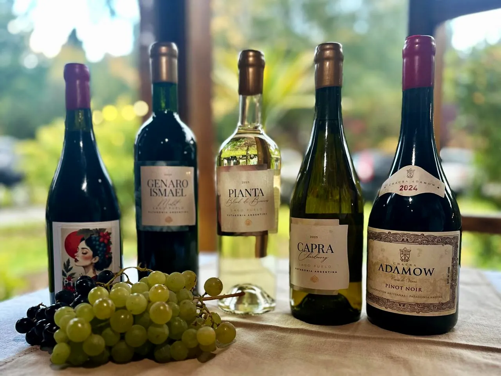
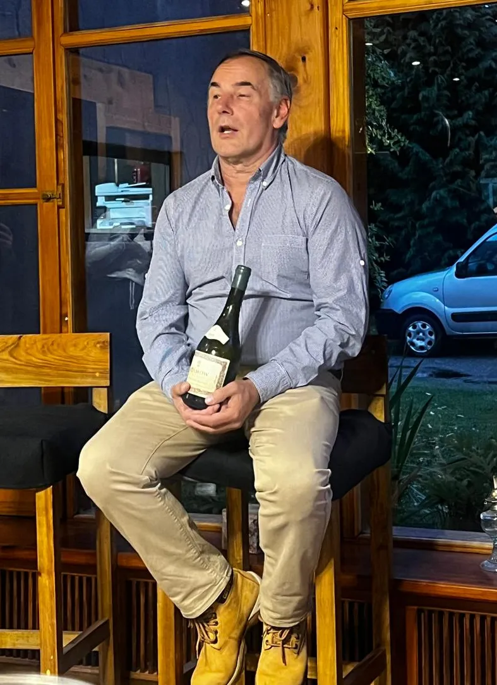
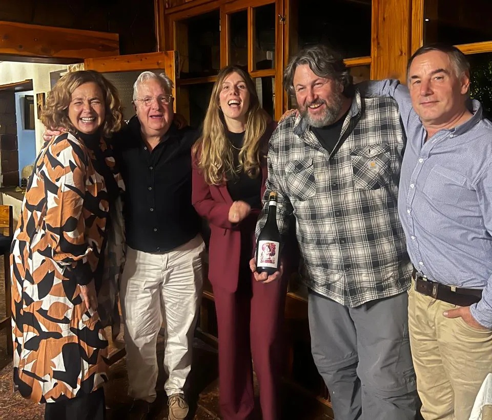
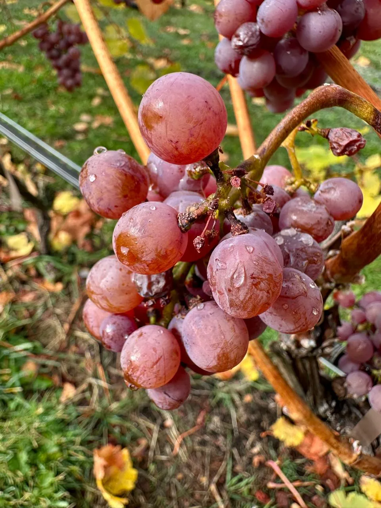

Vivimos un sábado especial en Linaje Wines, en Lago Puelo. Un encuentro que puso en primer plano algo que empieza a tomar forma con claridad en la Comarca Andina: el vino como expresión directa del paisaje.
De la mano de Antonella Bruzzoni, anfitriona del encuentro y actual presidenta de la Cámara de Turismo de Lago Puelo, se presentó una selección de vinos nacidos en este rincón de Chubut. No fue una degustación más. Fue una invitación a entender lo que está pasando en estos pequeños proyectos que empiezan a definir una identidad propia.
Vinos que empiezan a mostrar una voz propia
Antonella abrió la presentación con sus vinos. Primero, Pianta, un blend de blancas criollas con historia familiar, plantadas por su padre muchos años atrás, con origen en Brescia, Italia. Un vino refrescante, amable y muy disfrutable, que conecta directamente con esa herencia. Luego Capra, un Chardonnay fresco, preciso, de gran elegancia. Y finalmente Genaro Ismael, un Merlot joven, directo, que muestra el potencial de la zona sin maquillaje.
A continuación, Mónica Puente, de Casa Redonda Wines y presidenta de la Asociación de Productores de Lago Puelo, presentó sus vinos con una línea muy clara. Un Gewürztraminer joven, aromático y fresco, con notas de fruta tropical bien definidas y una identidad propia marcada, seguido por un Pinot Noir con paso por barrica de roble francés, equilibrado y con buena expresión varietal.
El cierre estuvo a cargo de Pedro Adamow, uno de los productores con mayor recorrido elaborando vinos en la zona, con un Sauvignon Blanc vibrante, de perfil muy aromático, donde aparecen notas de ruda, algo de jarilla y una capa frutal que completa el conjunto, con acidez marcada y gran equilibrio, con guiños a los estilos del Nuevo Mundo. Luego, un Pinot Noir joven, de esos que empiezan a marcar el pulso de la Patagonia y a definir qué tipo de vinos queremos que nos representen.

Un paisaje que no acompaña: define
Todo esto sucedió en un entorno que potencia la experiencia. El Linaje Hotel Boutique & Relax, ubicado en Cerro Radal, dentro de una chacra de más de 20 hectáreas, no es un hotel tradicional. Es un espacio pensado para bajar el ritmo, para conectarse con la naturaleza y con lo esencial.
Bosques nativos, frutales, huerta orgánica y vistas abiertas al valle construyen un escenario donde el vino encuentra sentido. A esto se le suman los viñedos, integrados al paisaje, que terminan de darle coherencia a la experiencia. Acá no se trata solo de alojarse, sino de vivir el lugar.
La degustación estuvo acompañada por una selección de quesos y ahumados de la zona, panes caseros y una propuesta gastronómica que refuerza el concepto de cercanía. El chef de la casa se lució con un plato a base de salmón, además de una opción vegetariana con productos de la chacra.

Un encuentro que pone a Lago Puelo en el mapa
Entre los invitados, se destacó la presencia de Andrés Rosberg y Alejandra Bidaseca, dos miradas muy influyentes dentro del vino argentino, desde lugares distintos pero complementarios. También participaron, entre otros, el productor y enólogo Camilo de Bernardi, desde El Bolsón, y el ingeniero agrónomo Darío González Maldonado, responsable de varios proyectos vitivinícolas en Chubut.
La presencia de Rosberg, una figura central en la sommellerie argentina e internacional, aportó además una dimensión simbólica importante al encuentro. No solo por su trayectoria, sino porque su mirada ayuda a poner en perspectiva el valor de estos proyectos cuando el vino se piensa como cultura, territorio y vínculo entre lugar y consumidor.

Pero más allá de los nombres, lo que se sintió fue otra cosa.
Un clima de encuentro real.
Camaradería.
Intercambio.
Gente que cree en lo que está haciendo.
Las charlas, las devoluciones y las miradas compartidas dejaron en evidencia el gran potencial enoturístico de la zona. Producciones pequeñas, sí, pero con una propuesta muy clara: venir, conocer, probar y entender el vino en el lugar donde nace.
Hay factores que explican lo que está pasando acá. La acidez natural que aportan estos climas, el agua de deshielo, las horas de luz en verano, la amplitud térmica y, sobre todo, la decisión de productores que están apostando a algo distinto. Todo eso se traduce en vinos que sorprenden y emocionan.

Una Patagonia que, en esta zona, se expresa de manera única y que invita a quien la visita a vivir una experiencia completa, profunda y difícil de olvidar.
En Lago Puelo, el vino no se explica.
Se entiende cuando estás ahí.
Y me queda, sobre todo, el agradecimiento por haber sido parte de este momento. De esos que uno reconoce como el inicio de algo. Un camino que recién empieza, pero que ya deja ver, con claridad, todo lo que puede llegar a ser.